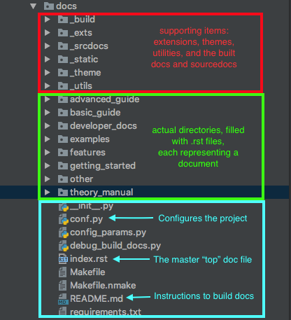

Repository Structure¶
Sample OpenMDAO-Compatible Repository Template¶
A lot of small details go into setting up a repository: the code itself, packaging mechanisms, continuous integration configuration, documentation building, and documentation styling, to name a few. To aid in the setup of a new tool built upon OpenMDAO, we have created a Github repository that is a basic template of how to set up your project. It is a small working example that you can clone and copy to help set up your own repository: OpenMDAO Library Template
Project Documentation Structure¶
First, to make things run smoothly, set up your project structure so that your documentation lies in the top-level project directory in a directory named /docs. For instance, “openmdao/docs” or “openaerostruct/docs”. The reasons for this location:
- This is where openmdao’s sourcedoc-generating script, generate_docs will be looking for docs.
- This is where the github-pages publishing package travis-sphinx will be looking for docs.
If you must put docs elsewhere for some reason, just be aware that it will require modifications to things in the above list.
Within /docs, you will have a lot of important files that will all interact to create your project docs:
- A conf.py file, that configures your Sphinx documentation completely. To see an example of ours, see Setting Up Project Documentation in Sphinx.
- An index.rst file, that is the top-level document in your entire project.
- A README.md file, that gives instructions on how to build the docs.
- A Makefile, that is responsible for the various options for doc building.
- Directories of .rst files that will be built.
- Directories of supporting modules, (e.g. extensions).
Here’s an example of how all those things might look within the context of a real project, OpenMDAO:
